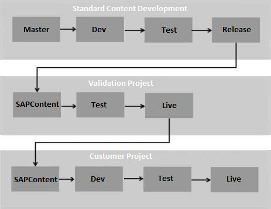

Understanding the Development Infrastructure
This section shows how you can manage the developed integration content using a source control repository. You can perform this task after the SaaS Admin has set up the development infrastucture. Any development infrastructure ensures setting up of basic requirements for controlling the versions of development content that developers create. The SaaS Admin typically creates and maintains an infrastructure as shown in the diagram below:

As a developer, you obtain the details of the repository and initial branch to start developing content. Also, you might have the responsibility of pushing and merging the developed content from one branch to another.
For example, referring to the diagram shown above, if you are developing content for the customer, you work in the Dev branch of the Customer Project repository. Then merge the content from the Dev branch to Test branch and push the content to make it available in the central repository. Thus, the central repository is up-to-date with developed content.
The SaaS Admin usually takes the responsibility of moving the content from one repository to another and often to release the developed content.
Examples of source control repositories are CVS, Git, Perforce etc. To use a particular
source control repository in Eclipse, you have to install its plugins on top of Eclipse.
For example, if you are using Git, you have to download the EGit plug-in from http://www.eclipse.org/egit/ and install it on Eclipse.
and install it on Eclipse.
The topics in this section specifically take the example of Git/Gerrit Repository.